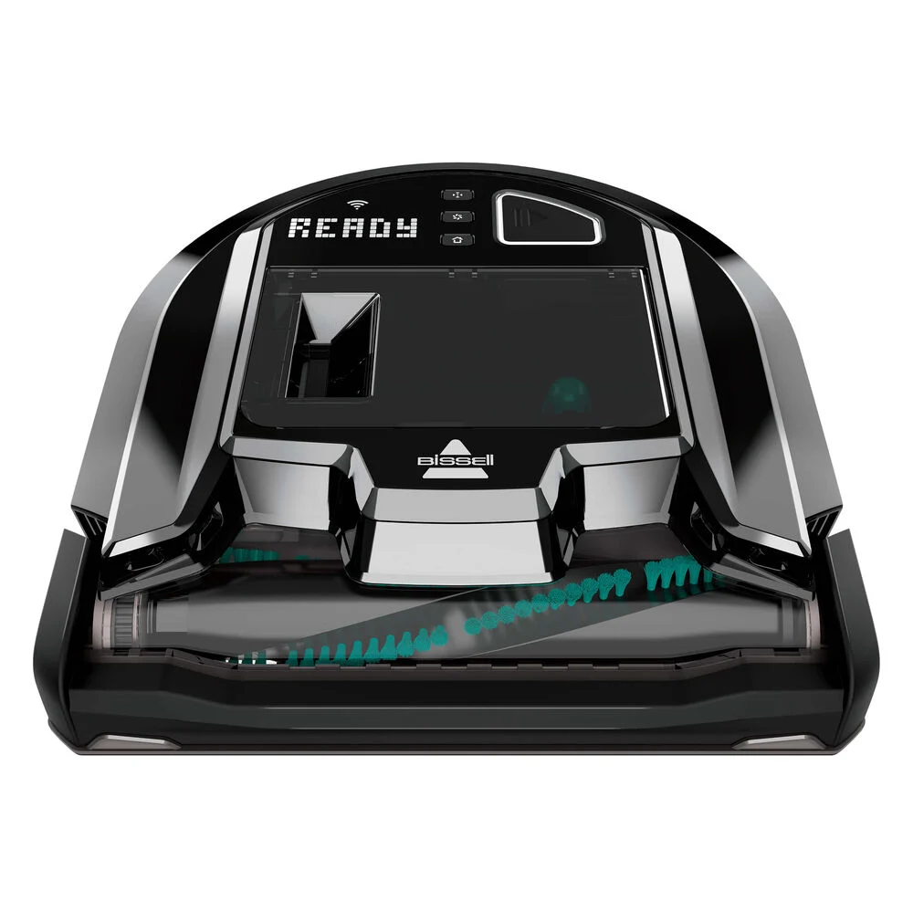

Evolving a hardware-first product into a scalable connected ecosystem spanning embedded interfaces, mobile applications, and a growing family of smart home products

Bissell was entering the connected robot vacuum category as consumer expectations for smart home products were rapidly evolving. The initial product generation relied heavily on fixed physical controls and a limited onboard display. As the portfolio matured, the opportunity shifted from designing an isolated device to creating a connected ecosystem supporting mobile interaction, remote control, automation, and a growing family of products.
What made this work especially complex was the intersection of physical product design, embedded systems, and emerging connected experiences within a fast-moving category. The initiative required balancing manufacturing realities, white-labeled hardware constraints, and evolving software capabilities — while aligning external manufacturing partners, internal stakeholders, and engineering teams around a shared experience vision that could scale beyond a single product generation.
We treated the robot vacuum as a connected product system, not an appliance with an app bolted on. Ethnographic research sessions in San Francisco — conducted alongside a recruiting and research partner — surfaced real-world cleaning behaviors, smart home expectations, and consumer frustrations that shaped the experience strategy. Stakeholder workshops and feedback sessions built shared understanding across teams on user needs, product priorities, and platform direction.
We designed the Clean Connect experience across the full product surface — embedded robot controls, mobile onboarding and scheduling, and the interaction logic tying them together. UX frameworks developed during early concept work were carried forward into later branded product generations, giving the work a longer shelf life than the initial launch.
The engagement helped position Bissell's robot vacuum offerings for a more connected future by establishing scalable UX foundations that influenced later product generations. The work strengthened alignment between physical and digital product teams, introduced more mature user-centered design practices, and helped evolve the organization's approach to connected product development.
The experience framework was built to hold up as the product portfolio grew — concrete enough to ship from, flexible enough to extend without starting over each time a new model launched.